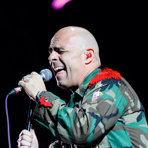

Directorio de Artistas
Alan Ramírez
{kind=link}
Astra
 |
Con palabras simples y un mensaje bastante directo llega Astra con su nuevo sencillo musical “Me gustas demasiado”, canción compuesta entre ella y el reconocido
productor Master Chris. La letra es un mensaje contundente para aquellas personas que quieren decir sin rodeos cuanto les gusta otra persona. Este trabajo es apoyado bajo el sello discográfico independiente Cortés Entertainment. |
Ballestyc
 |
“Hasta el corazón”, es la nueva canción de Ballestyc, quien promete lograr una producción de gran factura musical y audiovisual. Siendo este el resultado de años de experiencia que el artista colombiano aportó a la hora de la interpretación de este sencillo, el cual promete ser un éxito de carácter internacional. |
Brayan Fernández
{kind=link}
Camila Lomán
 |
Camila Lomán, artista revelación de la música popular nacida en la ciudad de Cali, nos presenta su más reciente éxito “De rodillas” con un nuevo formato y ritmo presentando una nueva faceta para la música popular y su carrera, tema que promete mucho a sus fans y seguidores.. |
D-Lord
 |
El cantante colombiano DLORD presenta su tercer y nuevo sencillo “Fiesta”, un ritmo envolvente que te invita a disfrutar y elevar tus niveles de adrenalina. La canción fue escrita por DLORD en compañía de Alexander DJ, quien se ha convertido en productor de las canciones “Infiel”, “Diamante” y ahora “Fiesta”. |
Daniel Medicis
 |
Daniel Medicis, cantante y compositor, nacido en Ipiales, Nariño, tiene una larga trayectoria en música mexicana. A sus 24 años de edad lanza su primer sencillo titulado “Veneno”, con el corazón golpeado con un nuevo formato y ritmo presentando una nueva faceta para la música popular éxito que dejará mucha expectativa en las mejores emisoras de radio y canales nacionales de Colombia. |
Danny Moreno
{kind=link}
Dennis Fernando
{kind=link}
Yiyo Bohórquez
{kind=link}
Elkin Hurtado
 |
El artista de música popular del momento, con tan solo 19 años, está pisando firme en los principales escenarios del país, conquistando cientos de fanáticos con su voz profunda Teléfono: 312 5549788 Instagram: @ElkinHurtadoMusic Facebook: Elkin Hurtado y su banda YouTube: Elkin Hurtado elkinhurtadomusica@gmail.com |
Espinoza Paz
 |
Espinoza Paz prepara una gira de presentaciones para poder estar muy cerca de todos sus seguidores en Colombia mientras recorre diferentes ciudades de México, Estados Unidos y Guatemala promocionando su nuevo material. |
Fernando Burbano
{kind=link}
Fernando Gil
{kind=link}
Fernel Guerra
{kind=link}
Jhoan Ospina
 |
Jhoan Ospina, artista revelación de la música popular, nos vuelve a sorprender con su nueva producción musical “Que lástima me das”, canción que ya empieza a sonar en el país.
El lanzamiento del video será en unos días para dar de qué hablar por su talento y creatividad al avanzar en este proyecto. |
Juan Carlos Hurtado “El Andariego”
{kind=link}
Juan Carlos Ensamble
 |
Juan Carlos Ensamble, presenta su nuevo sencillo, “Encantadora”. Una propuesta innovadora llena de romance y sabrosura. “Esta es la nueva salsa”. Contacto: |
Juan Palau
{kind=link}
Kelly Cárdenas
{kind=link}
Key Zanto
{kind=link}
Lady Noriega
 |
Lady Noriega, mujer de éxito, controvertida, sensual y artista en toda la extensión, en sus años de carrera ha marcado líneas difíciles de superar. Hoy vuelve a la escena musical de la mano del productor Hugo Gutiérrez, presentando su nuevo sencillo “Pateaste la lonchera”. |
Los Bacanes del Sur
 |
Los Bacanes del Sur, son una agrupación de música norteña y popular que viene llenando conciertos en todos los rincones de Colombia y presentan su nuevo éxito "Perdámonos esta noche". Ya se encuentra disponible en audio y video en todas las plataformas digitales. |
Los Inquietos del Vallenato
{kind=link}
Los P–Tres
 |
Los P–Tres, conformados por tres talentosos jóvenes, Duván, David Juan y Andreo, presentan un innovador concepto vocal, musical y de imagen que les permitirá posicionarse dentro del género popular – regional y presentan su tema “Bella”. |
Manolo
{kind=link}
Mateo De Dios
{kind=link}
Mauricio Ceballos
 |
Mauricio Ceballos, “Puro sentimiento”, inicia este 2018 pisando fuerte con su cuarto sencillo "Estoy mamao", una canción de su autoría y acompañada de su interpretación que les llega a todos. Contacto: |
Mau G
{kind=link}
Miguel Galindo
 |
El artista mexicano Miguel Galindo, presenta su más reciente éxito “Ya no me preguntes”, tema con el que llegó a conquistar a todos los colombianos. Contacto: |
Orlando López
 |
“Sufre corazón”, es el nuevo sencillo de
Orlando López, con el que logró salirse de lo común y mostró en su video una historia diferente. “Sufre corazón”, se está consolidando como un éxito nacional y está punteando los rankings de los medios de comunicación como uno de los mejores del 2018. |
Óscar Javier Rosero
{kind=link}
Roberto Antonio
 |
Roberto Antonio, cantante y compositor venezolano, co-fundador y precursor del tecnomerengue, está de regreso en el mercado discográfico para celebrar tres décadas de impecable trayectoria musical. Desde sus enormes hits de los 80', incluyendo “Noches de fantasía” y “Marejada” ha hecho girar el globo entero con sus éxitos, hasta su más reciente sencillo “Estar contigo”. Contacto: |
Shantana
{kind=link}
Stokoff
|  | Stokoff “El rey del country pop en español” después de lograr los primeros lugares en los listados radiales de Colombia y la Costa Este de los Estados Unidos con el lanzamiento de su nueva canción “Si tu no estás”, presenta su video clip, una producción única pues es la primera vez que un artista graba una pieza musical con Iphone X. Contacto: |
{kind=link}
{kind=link}